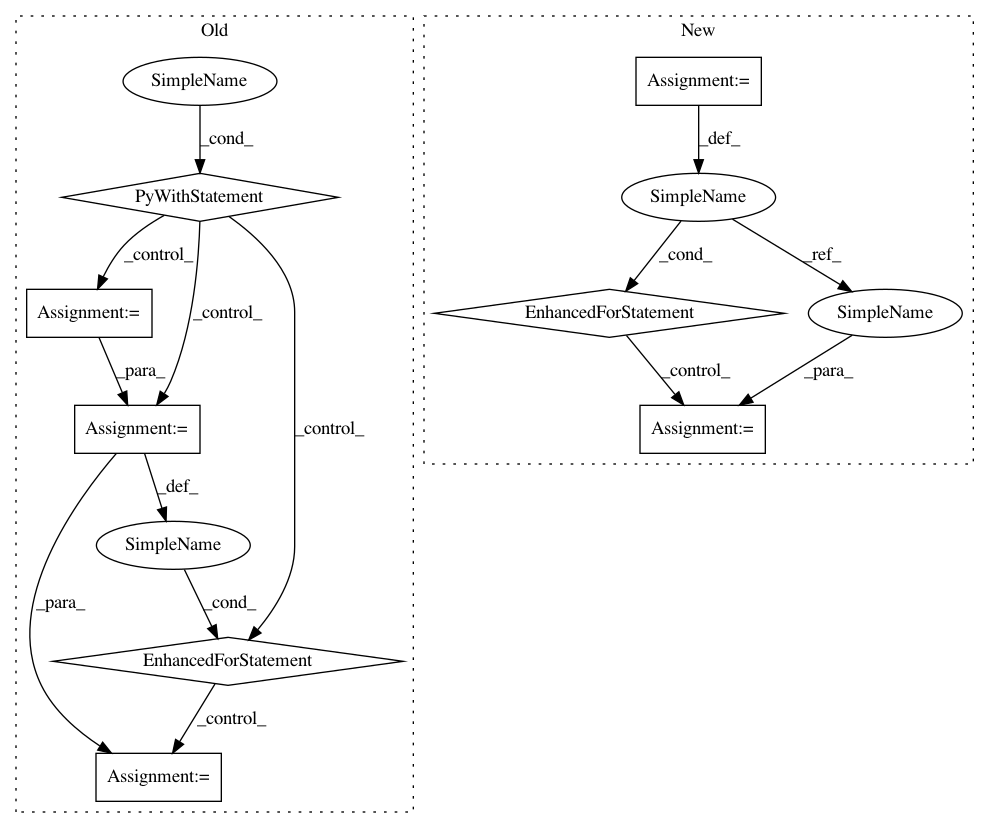

5a68c464caac68e4623f9a7b173bcf24aa719a5c,tensorflow_datasets/text/trivia_qa.py,TriviaQA,_generate_examples,#TriviaQA#Any#Any#Any#,230
Before Change
for filepath in files:
logging.info("generating examples from = %s", filepath)
with tf.io.gfile.GFile(filepath) as f:
triviaqa = json.load(f)
for article in triviaqa["Data"]:
if "Answer" in article:
answer = article["Answer"]
answer_dict = {
"aliases":
_strip(answer["Aliases"]),
"normalized_aliases":
_strip(answer["NormalizedAliases"]),
"matched_wiki_entity_name":
answer.get("MatchedWikiEntryName", "").strip(),
"normalized_matched_wiki_entity_name":
answer.get("NormalizedMatchedWikiEntryName", "").strip(),
"normalized_value":
answer["NormalizedValue"].strip(),
"type":
answer["Type"].strip(),
"value":
answer["Value"].strip(),
}
else:
answer_dict = {
"aliases":
[],
"normalized_aliases":
[],
"matched_wiki_entity_name":
"<unk>",
"normalized_matched_wiki_entity_name":
"<unk>",
"normalized_value":
"<unk>",
"type":
"",
"value":
"<unk>",
}
if self.builder_config.exclude_context:
article["SearchResults"] = []
article["EntityPages"] = []
def _add_context(collection, context_field, file_dir):
Adds context from file, or skips if file does not exist.
new_items = []
for item in collection:
if "Filename" not in item:
logging.info("Missing context "Filename", skipping.")
continue
new_item = item.copy()
fname = item["Filename"]
try:
with tf.io.gfile.GFile(os.path.join(file_dir, fname)) as f:
new_item[context_field] = f.read()
except (IOError, tf.errors.NotFoundError):
logging.info("File does not exist, skipping: %s", fname)
continue
new_items.append(new_item)
return new_items
def _strip_if_str(v):
return v.strip() if isinstance(v, six.string_types) else v
def _transpose_and_strip_dicts(dicts, field_names):
return {
tfds.core.naming.camelcase_to_snakecase(k):
[_strip_if_str(d[k]) for d in dicts]
for k in field_names
}
search_results = _transpose_and_strip_dicts(
_add_context(
article.get("SearchResults", []), "SearchContext", web_dir),
["Description", "Filename", "Rank", "Title", "Url",
"SearchContext"])
entity_pages = _transpose_and_strip_dicts(
_add_context(
article.get("EntityPages", []), "WikiContext", wiki_dir),
["DocSource", "Filename", "Title", "WikiContext"])
question = article["Question"].strip()
question_id = article["QuestionId"]
question_source = article["QuestionSource"].strip()
yield "%s_%s" % (os.path.basename(filepath), question_id), {
"entity_pages": entity_pages,
"search_results": search_results,
"question": question,
"question_id": question_id,
"question_source": question_source,
"answer": answer_dict,
}
After Change
with tf.io.gfile.GFile(filepath) as f:
current_record = ""
for line in f:
if line == " {\n":
current_record = line
elif line.startswith(" }"): // Handles final record as well.
article = json.loads(current_record + "}")
current_record = ""
example = parse_example(article)
yield "%s_%s" % (fname, example["question_id"]), example
else:
current_record += line
In pattern: SUPERPATTERN
Frequency: 3
Non-data size: 8
Instances
Project Name: tensorflow/datasets
Commit Name: 5a68c464caac68e4623f9a7b173bcf24aa719a5c
Time: 2019-12-06
Author: adarob@google.com
File Name: tensorflow_datasets/text/trivia_qa.py
Class Name: TriviaQA
Method Name: _generate_examples
Project Name: tensorflow/datasets
Commit Name: 5a68c464caac68e4623f9a7b173bcf24aa719a5c
Time: 2019-12-06
Author: adarob@google.com
File Name: tensorflow_datasets/text/trivia_qa.py
Class Name: TriviaQA
Method Name: _generate_examples
Project Name: pantsbuild/pants
Commit Name: 04629674f5f9e65bd35565b329f8c892a16865a4
Time: 2012-07-07
Author: benjy@foursquare.com
File Name: src/python/twitter/pants/tasks/jvm_compiler_dependencies.py
Class Name: Dependencies
Method Name: findclasses
Project Name: allenai/allennlp
Commit Name: 3aa33139216ff3f597fe2630d44aa69afe4d97a7
Time: 2018-01-17
Author: markn@allenai.org
File Name: allennlp/data/dataset_readers/dataset_utils/ontonotes.py
Class Name: Ontonotes
Method Name: sentence_iterator